Propuesta para arrancar la cuenta de Instagram propia de Athletum desde cero: investigación de cifras, estrategia, pilares, calendario de las primeras 4 semanas, piezas listas y banco de fotos.
Lo que miran los padres en EE. UU.: resultados, college, profesionales y nivel de competencia. Cada dato con su fuente y nivel de certeza. Solo lo confirmado va en piezas.
| Certeza | Dato | Fuente |
|---|---|---|
| Confirmado | En MLS NEXT desde la temporada 2023-24 Uno de los 9 clubes de expansión de 2023-24; uno de los 3 con camino completo U13–U19. | mlssoccer.com |
| Confirmado | 12 equipos MLS NEXT en 2026-27 6 en Homegrown (U13, U14, U15, U16, U17, U19) y 6 en Academy Division. 224 partidos oficiales de liga programados. | mlssoccer.com + calendario oficial MLS NEXT |
| Confirmado | 2025-26: 3 equipos en la MLS NEXT Cup U15 Homegrown, U15 Academy Division y U17 Homegrown (Salt Lake City, mayo 2026). | post oficial del club |
| Confirmado | 2025-26: 2 equipos en el Top 8 nacional U15 Homegrown y U15 Academy Division llegaron a cuartos de final de la MLS NEXT Cup. | post oficial del club |
| Confirmado | 2025-26: campeones de liga U15 Academy Division Título de liga que dio el cupo a la MLS NEXT Cup. | post oficial del club |
| Confirmado | Campeones de la Dreams Cup (U16 Elite) Torneo organizado por Inter Miami CF Academy, mayo 2026. U19 Academy Division finalista. | post oficial del club |
| Confirmado | 2026: 6 jugadores a academias profesionales Inter Miami CF Academy ×3 (David Uranga, Lucas Garcia, Thiago Quinteros), LA Galaxy Academy (Ryan Brady), Nashville SC (Ashraf Bedard Khalid) y AS Roma vía Juventus Residency (Antwan Vasquez). | posts del club + comunicado de Inter Miami CF |
| Confirmado | 12 jugadores de JAM/Athletum fichados por Inter Miami CF Academy desde 2022 2022-23: 2 · 2023-24: 1 · 2024-25: 6 (Athletum fue el 5.º club que más jugadores aportó entre 101 fichajes) · 2026-27: 3. Falta el dato de 2025-26. | comunicados oficiales de Inter Miami CF |
| Confirmado | MLS NEXT All-Star 2025 David Uranga (2009), uno de los 44 elegidos para el MLS NEXT All-Star Game (Austin, julio 2025). | SoccerWire |
| Confirmado | 3 jugadores invitados al U.S. Soccer Talent ID Enrique Villasmil (U14), Jaime Del Alma (U15) y Sur Hurtado (U15), noviembre 2026. | post oficial del club |
| Confirmado | De Athletum al profesionalismo y al college: Alex Naranjo Athletum MLS NEXT 2023 → Miami FC (USL Championship, 11 partidos en 2025-26) → UCF (NCAA D1). | UCF Athletics |
| Confirmado | College: Colorado School of Mines (NCAA D2) Zeus Tabora, defensor, freshman 2026; club: Athletum FC MLS Next. | roster oficial |
| Confirmado | College: Lake Forest College (NCAA D3) Lorenzo Rojas, mediocampista, sophomore 2026; club: Athletum FC MLS Next. | roster oficial |
| Confirmado | Director deportivo con licencia UEFA A y USSF A Giuseppe DePalo, Chief Soccer Officer: Inter Miami CF, selección de EE. UU. U19, Seattle Sounders; récord histórico de Nova Southeastern (155 victorias). | post oficial del club |
| Confirmado | Coaches con licencias nuevas de U.S. Soccer (2026) Marco Viviano, Nicolas Ramirez y Jacopo Camilli. | post oficial del club |
| Confirmado | Rivales de nivel profesional Liga 2026-27: Inter Miami CF, Orlando City SC, IMG, Tampa Bay United… Amistosos con Inter Miami CF Academy (sept. 2026). En Italia 2025-26: Juventus (Vinovo), AS Roma y SS Lazio. | calendario MLS NEXT + fotos y posts del club |
| Confirmado | Vínculo real con Juventus Jugadores de la academia de Miami despidieron al primer equipo en Continassa (27-03-2026) y salieron con los jugadores en Juventus–Atalanta (08-04-2026). | juventus.com |
| Confirmado | Demanda: 1.771 inscritos al tryout 2026-27 y 995 al ID Camp MLS NEXT Registros en PlayMetrics (dato interno, agregado). | PlayMetrics (interno) |
| Probable | ≈1.200 jugadores en programas competitivos 2026-27 Athletum/Juventus Competitive 662 · MLS NEXT Homegrown 158 · Academy Division 282 · Reserve 133 (puede haber jugadores en dos programas). La web dice "+1.500 kids". | PlayMetrics (interno) + athletumfc.com |
| Probable | Temporada 2026-27 Homegrown: 10 G · 4 E · 6 P (48 goles a favor, 30 en contra) Al 29-10-2026; cambia cada fin de semana. | datos oficiales del calendario MLS NEXT |
| Probable | ≈36 jugadores viajaron a Italia en marzo 2026 Inscritos: competición U13 MLS NEXT (10), Experience Roma (18), Turín (8). Confirmar cuántos viajaron. | PlayMetrics (interno) |
| A verificar | "Más de 60 partidos por temporada" Dato de Alessandro. La liga sola da 28 partidos a U13/U14 Homegrown, 20 a Academy Division y 12 a U15–U19 Homegrown; con Flex, Fest, torneos y amistosos puede superar 60 en algunos equipos. Confirmar qué equipos. | reunión 29-10 |
| A verificar | Total de jugadores que llegaron al college En fuentes públicas solo aparecen 3. Hace falta la lista del club (y permiso de las familias para nombrarlos). | Cristian / Stefano |
| A verificar | Participación en MLS NEXT Fest (Arizona, diciembre 2026) PlayMetrics tiene 3 programas (U13–U14, U15–U16, U17–U19). Confirmar qué equipos van. | PlayMetrics (interno) |
| A verificar | Año de fundación y número total de jugadores formados Alessandro: Athletum nació hace ~4 años como rama MLS NEXT. PlayMetrics registra 10.675 jugadores únicos desde 2023-24 (incluye toda la academia). | reunión 01-10 + PlayMetrics |
| Día | Formato | Contenido | Material |
|---|---|---|---|
| Día 1 | Post | WELCOME — la casa oficial de Athletum FC Welcome to the official home of Athletum FC. 🟡⚫ MLS NEXT Homegrown & Academy Division, U13–U19, Miami. Follow the journey and join us at the next tryout: athletumfc.com/tryouts | Lista (pieza 1) |
| Día 2 | Carrusel | THE PATHWAY — las escaleras de Athletum (pieza ya aprobada) From Pre-Academy to MLS NEXT Homegrown: every level has a next step. Where does your player fit? Find out at athletumfc.com/tryouts | Ya hecha (S3 Pathway v3) |
| Día 3 | Post | 2025-26 IN NUMBERS Last season in numbers: 3 teams at the MLS NEXT Cup, 2 in the national Top 8, a league title and a Dreams Cup trophy. 🏆 Next season starts with you: athletumfc.com/tryouts | Lista (pieza 2) |
| Día 4 | Post | NEXT LEVEL — 6 jugadores a academias profesionales In 2026, six Athletum players took the next step: Inter Miami CF Academy, LA Galaxy, Nashville SC and AS Roma. This is what development looks like. ➡️ athletumfc.com/tryouts | Lista (pieza 3) |
| Día 5 | Historias | MATCH WEEKEND (automático, viernes) | Automático |
| Día 6 | Post | PLAY THE BEST — contra quién competimos Inter Miami CF, Orlando City SC, IMG… and Juventus, Roma and Lazio in Italy. Our players compete against the best every week. Ready? athletumfc.com/tryouts | Lista (pieza 4) |
| Día 7 | Reel | Inside an Athletum training (video crudo de prácticas) Intensity. Discipline. Quality. This is a normal Tuesday at Athletum. ⚽ Join us: athletumfc.com/tryouts | Editar video (Phalkon) |
| Día | Formato | Contenido | Material |
|---|---|---|---|
| Día 8 | Post | Meet our Chief Soccer Officer — Giuseppe DePalo (UEFA A · USSF A) A UEFA A and USSF A coach leading our sporting project: Inter Miami CF, U.S. U19 National Team, Seattle Sounders. Our players learn from the best. athletumfc.com | Pieza nueva (foto real del coach) |
| Día 9 | Carrusel | Our coaches keep learning: licencias U.S. Soccer 2026 Better coaches, better players. Congrats to Marco, Nicolas and Jacopo on their new U.S. Soccer licenses. 👏 | Pieza nueva |
| Día 10 | Post | Talent ID — 3 jugadores invitados por U.S. Soccer (colaboración) Three Athletum players invited to the U.S. Soccer Talent ID. 🇺🇸 Proud of you, boys! | Ya hecha (Talent ID Center) |
| Día 11 | Reel | Why Athletum? — los jugadores cuentan por qué eligieron el club (colaboración) | Reutilizar reel de JAM (10-sep) |
| Día 12 | Historias | FINAL SCORES (automático, lunes) + encuesta "¿quién es el MVP?" | Automático |
| Día 13 | Carrusel | Italy 2026: Athletum vs Juventus, Roma y Lazio (fotos reales de marzo) Training and competing in Italy against Juventus, Roma and Lazio. Experiences that shape players. 🇮🇹 | Pieza nueva con fotos de Vinovo/Roma/Lazio |
| Día 14 | Post | From Athletum to college — casos reales (solo con permiso de las familias) From Athletum to NCAA soccer. Our pathway leads to the next level, on and off the field. | Esperando permiso y lista del club |
| Día | Formato | Contenido | Material |
|---|---|---|---|
| Día 15 | Post | Media Day 2026-27 — primera foto oficial con la camiseta blanca y dorada New season. New kit. Same hunger. 🟡⚪ | Fotos del Media Day (~10 días) |
| Día 16 | Carrusel | Meet the squads — un equipo por lámina (U13 a U19) | Fotos del Media Day |
| Día 17 | Post | MIAMI DADE MLS NEXT ID CAMP — 23 de noviembre Want to be scouted for MLS NEXT? Join the Miami Dade MLS NEXT ID Camp on November 23. Register: athletumfc.com | Pieza nueva (confirmar datos del evento) |
| Día 18 | Reel | Goal of the week / mejores jugadas del fin de semana | Video de partidos |
| Día 19 | Historias | MATCH WEEKEND (automático) | Automático |
| Día 20 | Post | Season so far — récord y goleadores Homegrown (datos MLS NEXT) Halfway through the fall: our Homegrown teams keep climbing. 💪 | Pieza nueva (datos del día) |
| Día 21 | Reel | Player spotlight — un jugador por semana (pregunta y respuesta) | Grabar con Jesús/Phalkon |
| Día | Formato | Contenido | Material |
|---|---|---|---|
| Día 22 | Carrusel | Road to MLS NEXT Fest (Arizona, diciembre) Next stop: MLS NEXT Fest. 🌵 Our teams are getting ready to compete in front of college and pro scouts. | Confirmar equipos |
| Día 23 | Post | Thanksgiving — gracias a familias y coaches | Foto del Media Day |
| Día 24 | Reel | A day in the life of an Athletum player | Grabar |
| Día 25 | Historias | Preguntas de padres: "¿cómo entra mi hijo a Athletum?" (caja de preguntas) | Historias |
| Día 26 | Post | Pathway explained: de Pre-Academy a Homegrown en 5 pasos Every player has a path. Here is ours. 👇 | Pieza nueva |
| Día 27 | Carrusel | Juventus connection: Continassa y Allianz Stadium (marzo-abril 2026) Our academy players with the Juventus first team in Turin. 🇮🇹 That is the Juventus connection. | Fotos del viaje / juventus.com |
| Día 28 | Post | Resumen del mes + llamado a tryouts One month on our new home. Thank you for following! 🟡⚫ Next tryouts: athletumfc.com/tryouts | Pieza nueva |
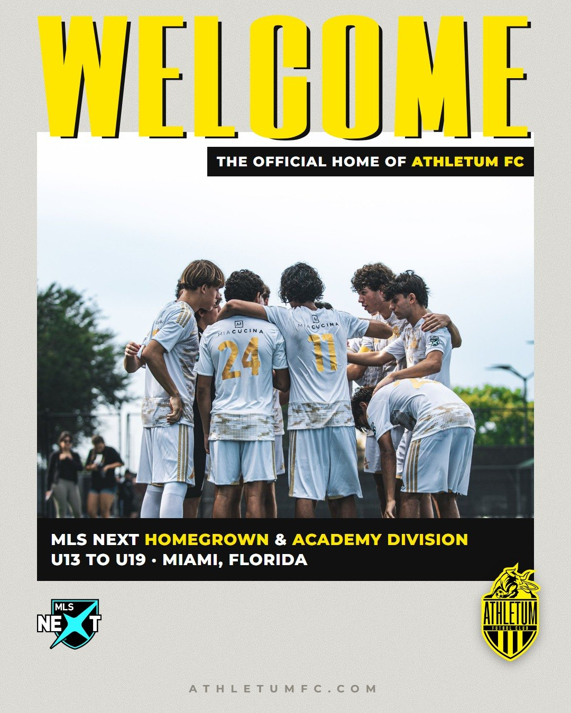
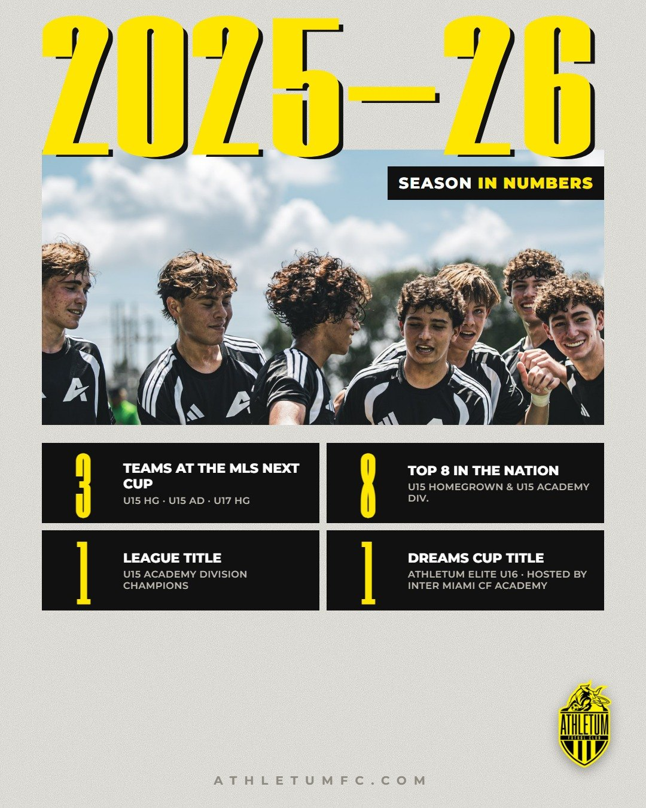
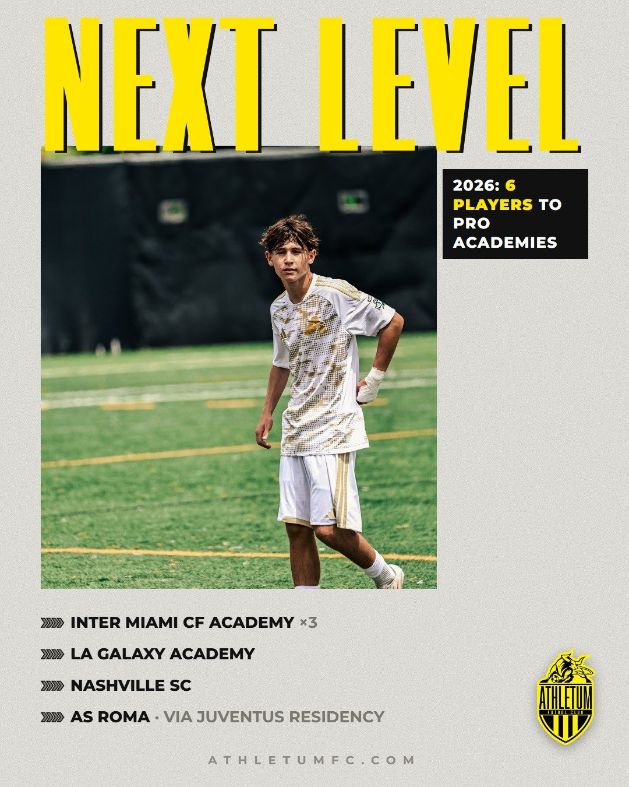
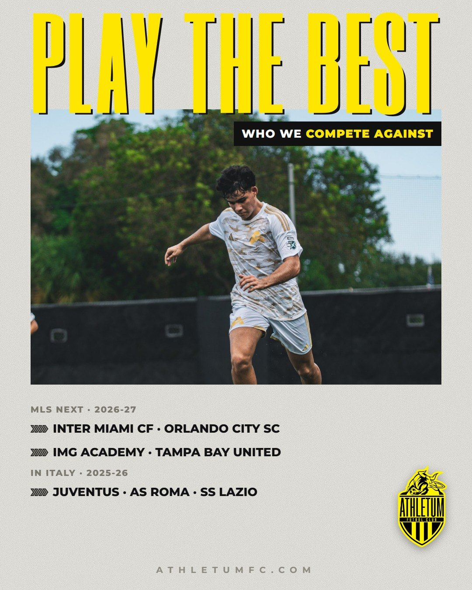
Revisadas a tamaño completo: caras nítidas, sin logos raros, camiseta 2026-27 blanca y dorada o la negra de la temporada pasada. Origen: carpetas de fotógrafo de 2026 (sept.) y 2025-26.
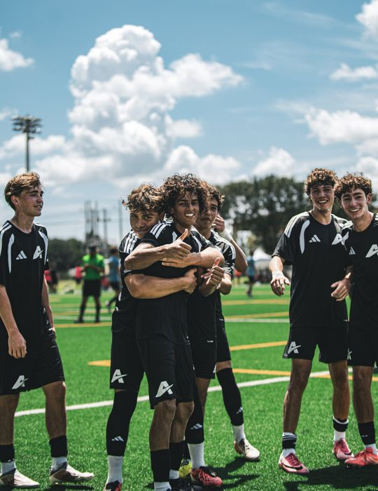
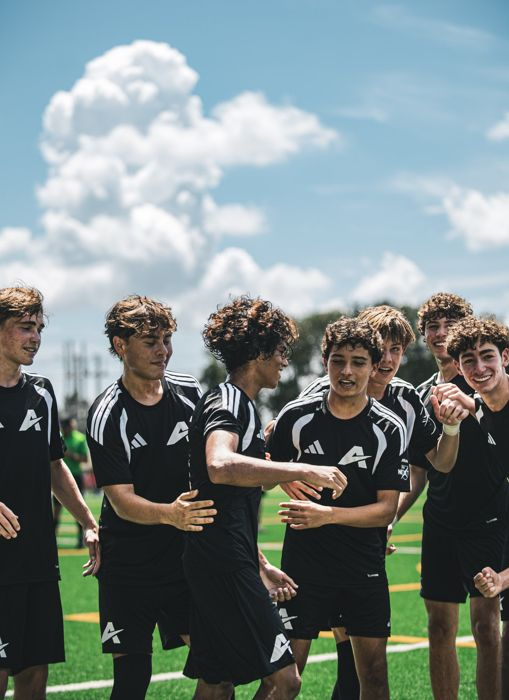
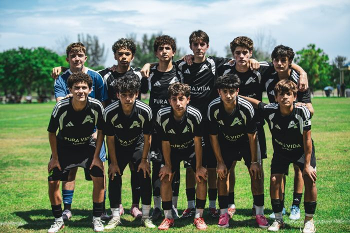
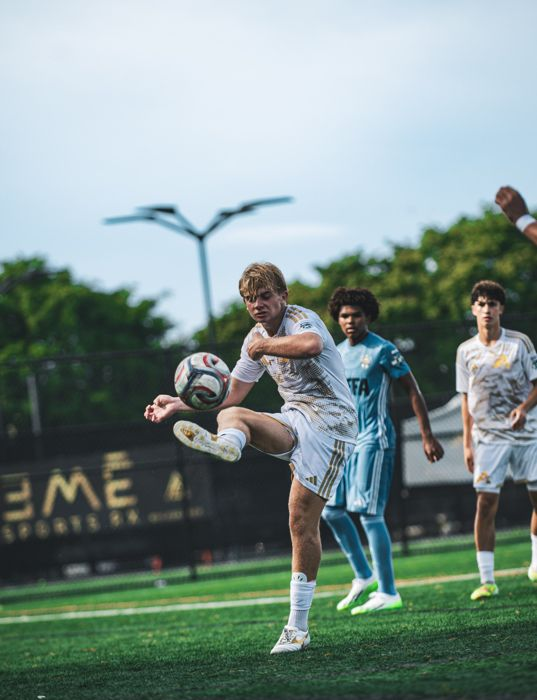
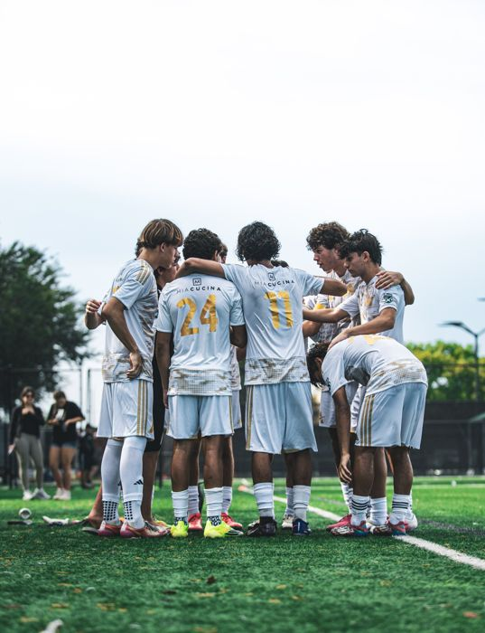
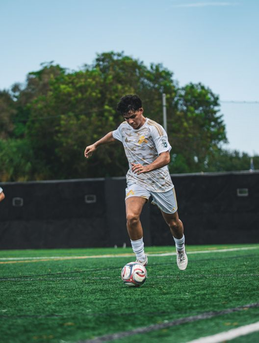
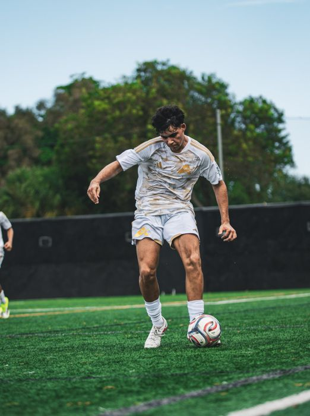
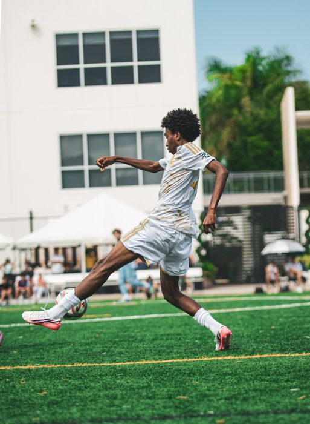
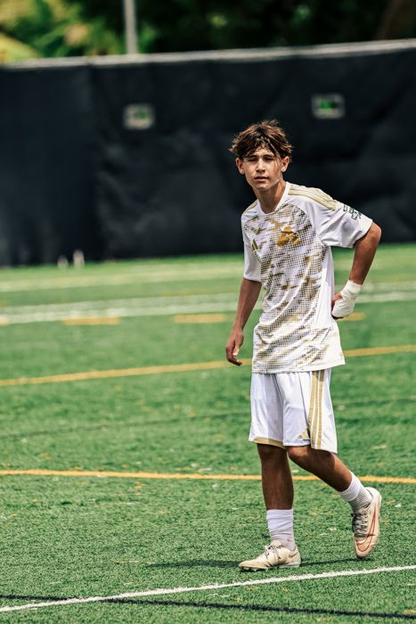
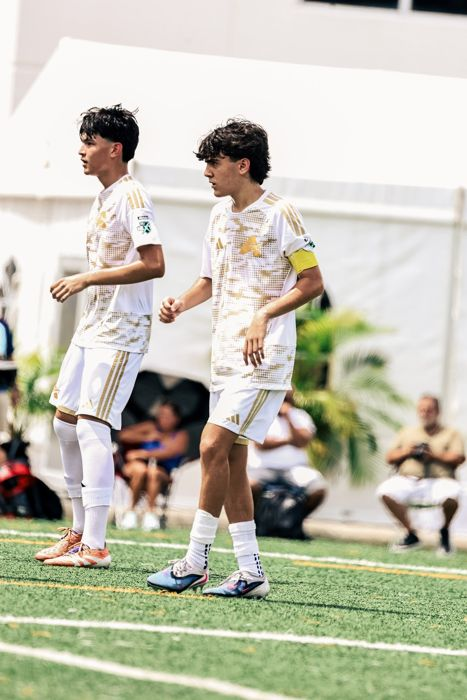
Más material disponible: MLS NEXT Fest 2025 (133), Juventus vs Athletum en Vinovo (89), Roma (27) y Lazio (38), College ID Showcase (27), Media Day 2025-26 (49) y +1.300 fotos de sept. 2026. Llega el Media Day 2026-27 en ~10 días.
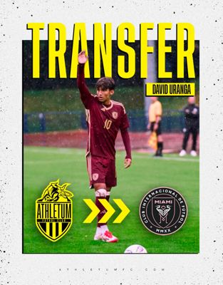
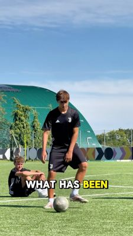
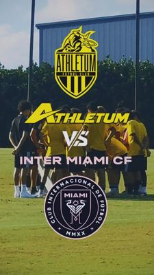
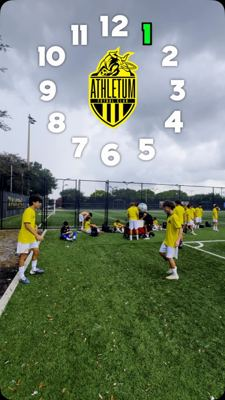
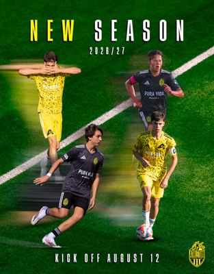
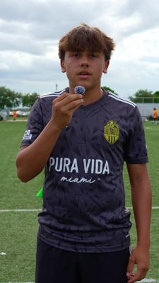
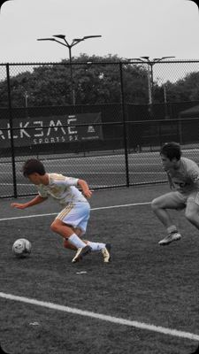
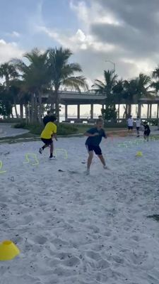
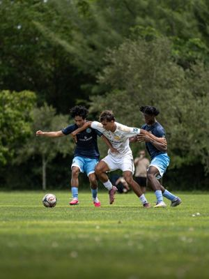
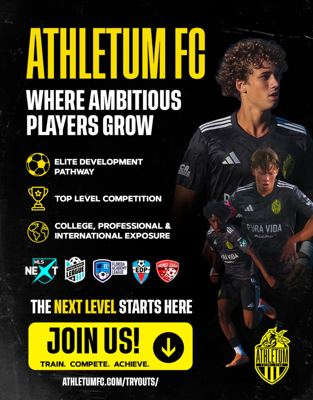
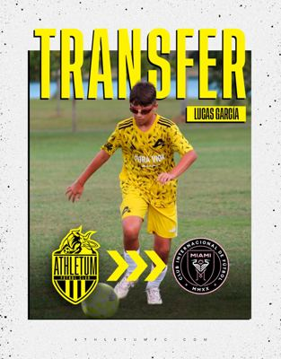
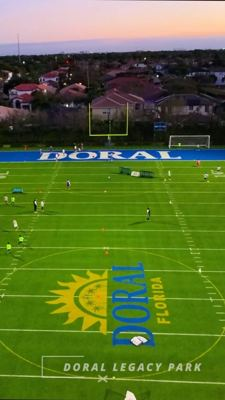
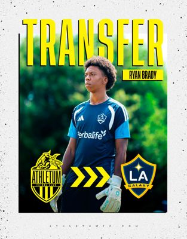
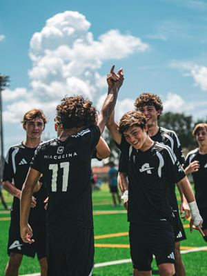
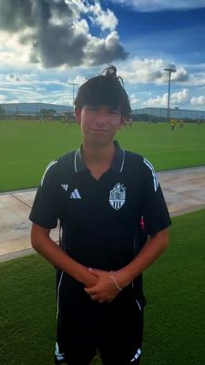
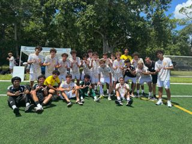
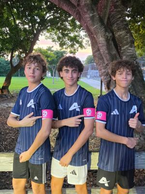
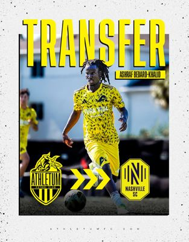
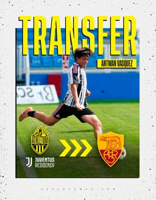
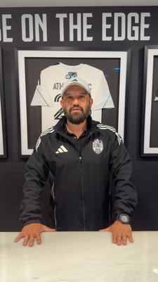
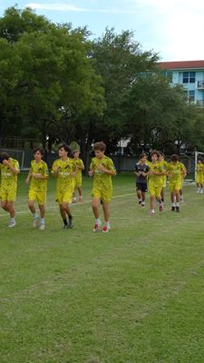
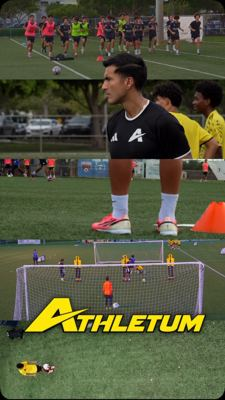
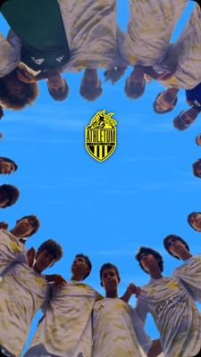